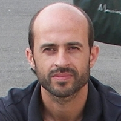
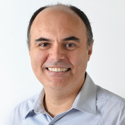

Fe-BR: Base de Dados Brasileira de Ferro do Solo
EQUIPE
Alessandro Samuel-Rosa (Execução)
|
|
Alessandro estudou Ciência do Solo e trabalha na Universidade Federal de Santa Maria (UFSM) desde o final de 2016. Após seus primeiros trabalhos sobre as interações entre o uso da terra e a qualidade do solo na UFSM, em 2012 mudou para o campo da Pedometria. A colaboração com pesquisadores do Centro Nacional de Pesquisas sobre Solos (Embrapa), do International Soil Reference and Information Centre (ISRIC), da Wageningen University and Research Centre (WUR) e da Universidade Federal Rural do Rio de Janeiro (UFRRJ) permitiu-lhe dominar múltiplos métodos e técnicas pedométricas. Seu principal interesse científico é a modelagem espacial do solo com foco em estratégias de amostragem, seleção e calibração de modelos e análise de incerteza. Alessandro publicou recentemente alguns artigos relevantes sobre esses tópicos em revistas internacionais. Alessandro também é o autor de dois pacotes para o R, os quais são amplamente utilizados, cada um com mais de 200 downloads por mês.
Homepage: http://samuel-rosa.github.io/
Currículo: Lattes
E-mail: alessandrosamuel em mail.ufsm.br
Ricardo Simão Diniz Dalmolin (Execução)
|
|
Ricardo possui graduação e mestrado em Agronomia pela UFSM e doutorado em Ciências do Solo pela Universidade Federal do Rio Grande do Sul (UFRGS). Atualmente é professor associado da UFSM, atuando no Programa de Pós-Graduação em Ciência do Solo (PPGCS) e no Programa Pós-Graduação em Educação Ambiental. Ricardo é consultor de diversas revistas científicas e líder do Grupo de Pesquisa do CNPq Gênese, composição e comportamento dos solos do RS. Ricardo tem experiência na área ambiental e agronômica, com ênfase em gênese, morfologia e classificação do solo, atuando principalmente nos temas ‘levantamento de solos’, ‘classificação de solos’, ‘aptidão de uso das terras’, ‘sensoriamento remoto’ e ‘mapeamento digital de solos’. Ainda foi presidente do Núcleo Regional Sul da Sociedade Brasileira de Ciência do Solo, membro do Conselho Diretor da Sociedade Brasileira de Ciência do Solo, e responsável pelo Museu de Solos do RS.
Homepage:
Currículo: Lattes
E-mail: dalmolin em ufsm.br
Paulo Ivonir Gubiani (Execução)
|
|
Paulo possui graduação em Agronomia, e mestrado e doutorado em Ciência do Solo pela UFSM. Atualmente Paulo é professor adjunto da UFSM, com experiência na área de Agronomia, com ênfase em Física do Solo, atuando principalmente nos seguintes temas: estrutura do solo, compactação do solo, compressibilidade do solo, relação entre propriedades físicas do solo e crescimento de plantas, balanço hídrico.
Homepage:
Currículo: Lattes
E-mail: paulogubiani em gmail.com
Eloi Carvalho Ribeiro (Colaboração)
|
 |
Eloi é um geoinformata, Mestre em Ciências dos Recursos Naturais e Engenharia Ambiental pelo Instituto Politécnico de Castelo Branco, Portugal, possuindo ainda Diploma de Estudos Avançados em Sistema de Informação Geográfica (SIG) pela Universidade Politécnica de Valência, Espanha. Eloi ingressou no ISRIC em abril de 2013, onde atua como responsável técnico pelo World Soil Information Service (WoSIS). Eloi fala inglês, português e espanhol.
Homepage:
Currículo: ResearchGate
E-mail: eloi.carvalhoribeiro em wur.nl
Stanley Robson de Medeiros Oliveira (Colaboração)
|
 |
Stanley é graduado e mestre em Ciência da Computação pela Universidade Federal de Campina Grande (UFCG) e doutor em Ciência da Computação pela Universidade de Alberta, Canadá. Stanley tem formação complementar em desenvolvimento de habilidades gerenciais pela Fundação Dom Cabral e em gestão avançada pela Amana-Key. Hoje é empregado da Empresa Brasileira de Pesquisa Agropecuária (Embrapa) e professor colaborador do Programa de Pós-Graduação da Faculdade de Engenharia Agrícola (Feagri) da Universidade de Campinas (Unicamp). Na Embrapa já atuou como desenvolvedor de software, analista de sistemas, líder de projetos e Chefe Adjunto de Administração. Atualmente é pesquisador do Laboratório de Inteligência Computacional da Embrapa Informática Agropecuária. Suas linhas de pesquisa são ‘mineração de dados’, ‘aprendizado de máquina’, ‘banco de dados’ e ‘sistemas de suporte à decisão’. Tem interesse em desenvolvendo de liderança e de habilidades gerenciais.
Homepage:
Currículo: Lattes e ResearchGate
E-mail: stanley.oliveira em embrapa.br